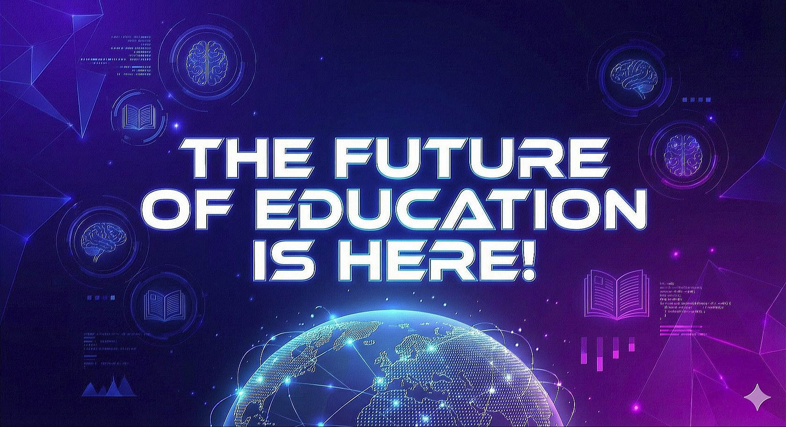

Global Sovereign University is moving beyond passive reading. Welcome to the era of active survival, spatial learning, and instant mentorship.
Learning here is not a spectator sport. Through our Trifurcation Road architecture, you choose your level of commitment—from the Two-Minute Habit to the Platinum Mastery Track.
As you navigate our deep research on systemic power, the parasocial trap, and civic sovereignty, you will face the Enhanced BookGame. Guided by GENO, your interactive learning mediator, you will be thrust into real-world scenarios where your choices have cascading consequences. You don't just study the material; you must apply it to survive the simulation.
Explore the Trifurcation RoadThe future of learning is highly personalized. We are integrating seamless, browser-based video conferencing powered by Google Meet. No external apps, no complicated links—just direct access to guidance.
Notice to Potential Students: To unlock advanced learning tiers, you must match with a GSU Mentor. Our automated Google resource matching system will pair you with a guide tailored to your specific intellectual journey.
Request a Mentor MatchWe are actively laying the groundwork to transition the Trifurcation Road from a 2D map into a fully immersive Virtual Reality campus. Soon, you will be able to walk the Comprehension Bridge, interact with systemic models in real-time, and collaborate with your mentors in shared spatial environments. The future is closer than you think.
Before you master systemic civic dynamics, you must master your immediate environment. Enter the Bronze Track today and complete your first short GENO comprehension check to unlock our Free DIY Survival Library.